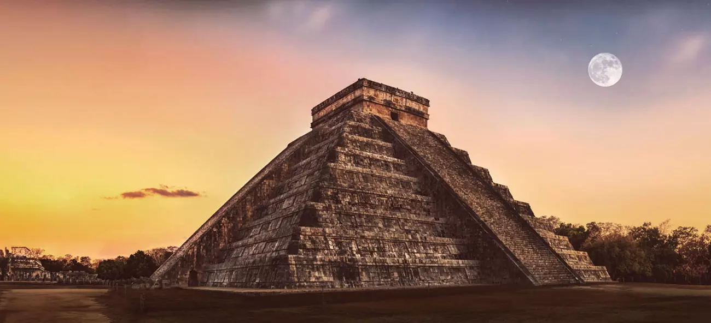
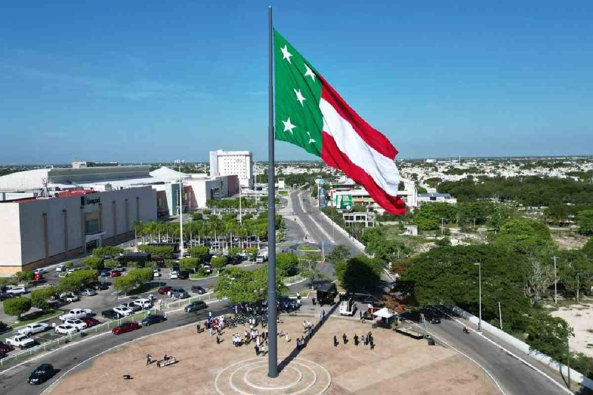
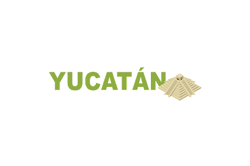
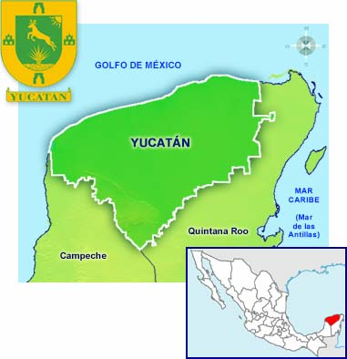
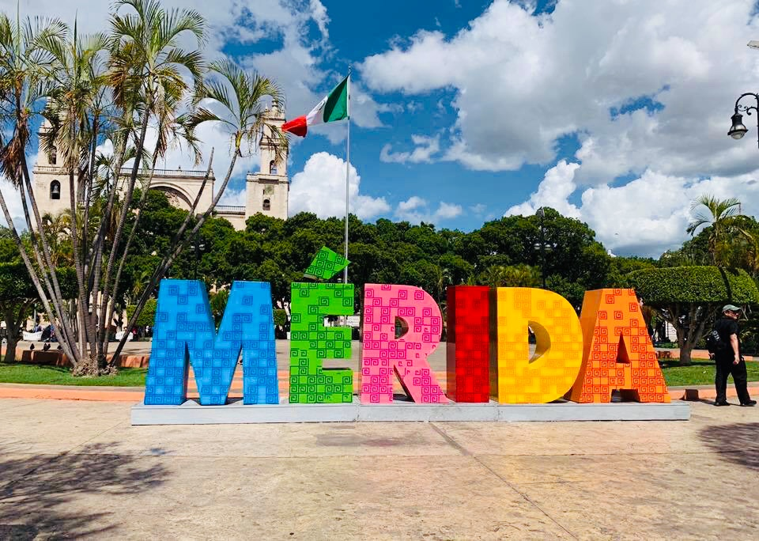

CULTURA YUCATECA

HISTORIA DE LA PENINSULA DE YUCATAN
La historia de Yucatán propiamente dicha, empieza a partir de la conquista española, en la primera mitad del siglo xvi. Antes de eso, el territorio que hoy se denomina península de Yucatán, era un reducto territorial en el que se desarrolló, probablemente por más de un milenio, el pueblo y la cultura maya y que fue llamado por los propios mayas, el Mayab. La palabra mayab, ma'ya'ab, significa: pocos, no muchos; el lugar donde hay poca gente o de gente
Anteriormente a eso en el eje cronológico, en alguna porción del mismo espacio territorial, hubo poblamientos cuyo origen no ha sido científicamente confirmado y que posiblemente daten de finales del pleistoceno o de la edad del hielo (hace aproximadamente 10.000 - 12.000 años), como parece deducirse de los hallazgos en las grutas de Loltún y en las cavernas de Tulum (Mujer de las Palmas y Joven de Chan Hol).
En el pasado remoto, hace 65 millones de años, a finales del cretácico, en el norte de la región peninsular, cayó un meteorito o una fracción de él, que produjo una catástrofe mundial al hacer desaparecer a los dinosaurios de la faz de la tierra y provocar el denominado Cráter de Chicxulub.1
SIGNIFICADO DE "YUCATAN"
El nombre Yucatán, también asignado a la península se originó durante las primeras exploraciones de los conquistadores provenientes de Europa. Son fidedignas las versiones que coinciden en que este nombre habría resultado de una confusión entre los habitantes mayas y los primeros exploradores españoles hacia 1517:
Según una de ellas todo fue consecuencia de que un explorador hispano interpelando a un indígena maya quiso saber el nombre de la región. El indígena probablemente le respondió Ma'anaatik ka t'ann que en idioma maya yucateco significa no entiendo tu hablar o no te comprendo.
También se dice que los españoles dieron el nombre de Yucatán a la región porque los mayas contestaban a sus preguntas con la frase uh yu ka t'ann, que en maya significa «oye como hablan», y los españoles entendieron Yucatán.
Otras versiones indican que Yucatán proviene del maya Ci u t'ann, que significa «no entiendo».
En cualquier caso los hispanos entendían algo parecido al vocablo Yucatán que hoy denomina e esta región peninsular y al estado mexicano del mismo nombre.
TERRITORIO DE YUCATAN
El Estado de Yucatán Se localiza en el sureste de la República Mexicana, en la parte norte de la península de Yucatán. Limita al norte y oeste por el golfo de México, al sureste por el estado de Quintana Roo, y al suroeste por el estado de Campeche. La mayor parte de su territorio es una planicie, constituido en su mayoría por roca caliza. Su extensión territorial es de 39,524 km2. Lo integran 106 municipios, y su capital es Mérida.
MUNICIPOS DE YUCATAN

LA CAPITAL DE YUCATAN
Mérida (en maya: Joꞌ)6 es la capital y ciudad más poblada del estado mexicano de Yucatán, así como la cabecera del municipio homónimo. Se ubica al noroeste del estado en el sureste del país, región de la que es el área urbana más habitada y su principal centro social, cultural, educativo y financiero.7 Según el Censo de Población y Vivienda 2020 del Instituto Nacional de Estadística y Geografía (INEGI), la ciudad contaba en ese año con una población de 921 771 habitantes, siendo la duodécima más poblada de México, mientras que la Zona Metropolitana de Mérida, que también abarca las ciudades de Kanasín y Umán, albergaba una población de 1 316 088 habitantes, situándose como la undécima más habitada del país
Es considerada una de las ciudades con mejor calidad de vida del país y una de las más seguras del continente. Su patrimonio histórico es producto de la mezcla de las culturas maya, española y africana durante la época colonial influenciada posteriormente por las culturas francesa y libanesa con algunas aportaciones de la neerlandesa, coreana e italiana. Gracias a su rica herencia cultural fue la primera ciudad en ser nombrada Capital Americana de la Cultura y la primera en recibir este título en dos ocasiones. Es además también parte de la Red de Ciudades Creativas de la UNESCO en la categoría de gastronomía. Por otro lado, el centro histórico de Mérida es el tercero más grande del continente y la Catedral de San Ildefonso, ubicada frente a la Plaza Grande y construida con piedras de ruinas mayas adyacentes, es la más antigua de la América continental. A un costado de esta se encuentra el museo MACAY con obras que la consolidan como una de las ciudades culturalmente más ricas de la región
En el plano económico, la revista Forbes ha clasificado a Mérida en tres ocasiones como una de las tres mejores ciudades del país para vivir e invertir. A nivel nacional, de entre las ciudades con más de un millón de habitantes, el Instituto Mexicano para la Competitividad (IMCO) la ha catalogado como una de las 3 ciudades más competitivas de la república. Por su infraestructura y altos estándares sociales la ciudad es escogida a menudo como sede de varios eventos de talla internacional; ha sido sede de dos reuniones Estados Unidos-México, de un encuentro con Cuba, de una Cumbre de los Laureados al Premio Nobel de la Paz y de cumbres de la Asociación de Estados del Caribe y de la Alianza del Pacífico. Además, en Mérida se han llevado a cabo varias olimpiadas científicas internacionales como la de física, matemáticas e informática. Cada año también acoge la Feria Internacional de la Lectura Yucatán (FILEY) de la Universidad Autónoma de Yucatán (UADY).
La ciudad se nombró así en honor a la Mérida de España y fue fundada en 1542 por Francisco de Montejo, «El Mozo» sobre los vestigios de la ciudad maya de TꞌHó o Joꞌ que se encontraba virtualmente deshabitada cuando el Imperio español emprendió la Conquista de Yucatán. También se la conoce como «Ciudad Blanca», un hecho que se remonta a la fundación de la ciudad cuando los colonizadores españoles durante el primer siglo después de la conquista de los mayas, motivados por razones de seguridad y dada la persistente rebelión de los indígenas que por mucho tiempo no pudo ser sofocada por completo, decidieron hacer a la ciudad blanca, es decir, solo para los blancos de la época. Los antiguos arcos de entrada a la ciudad fueron levantados por este motivo, y más allá de estos se encontraban los barrios de indios que luego serían sobrepasados por el crecimiento demográfico. Actualmente Mérida es una ciudad multicultural, así como el principal y más importante núcleo urbano de la península.
INTEGRANTES
Manuel Jesus Chable Sanchez
Jorge Ricardo Gongara Aldana
Juan Diego Yah Canche
DOCENTE
Nelson Hernandez